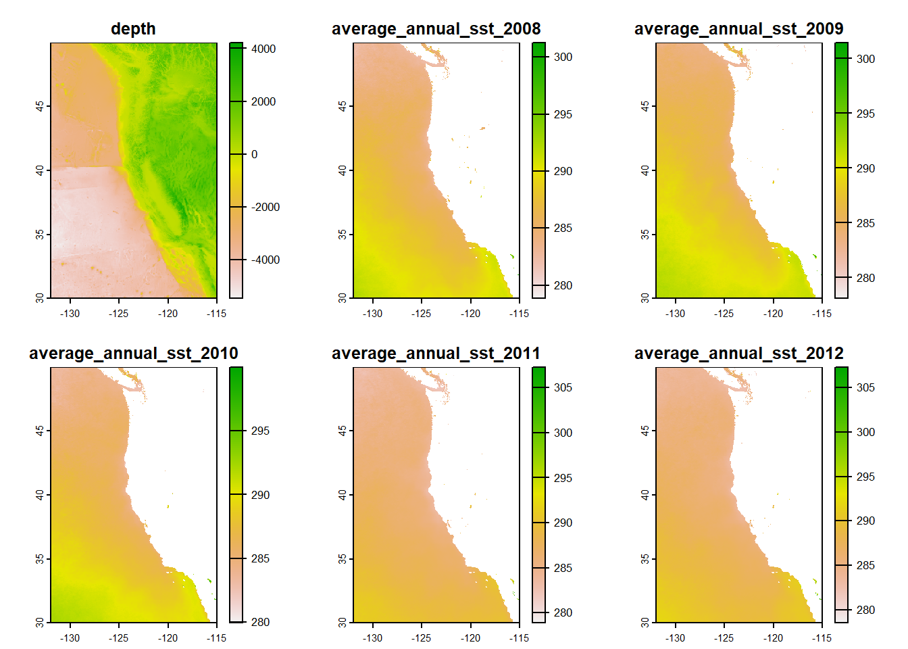
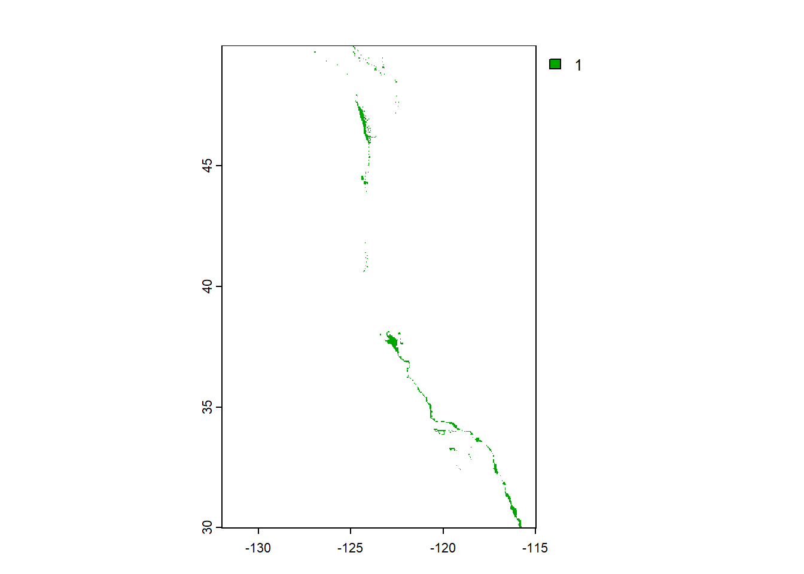
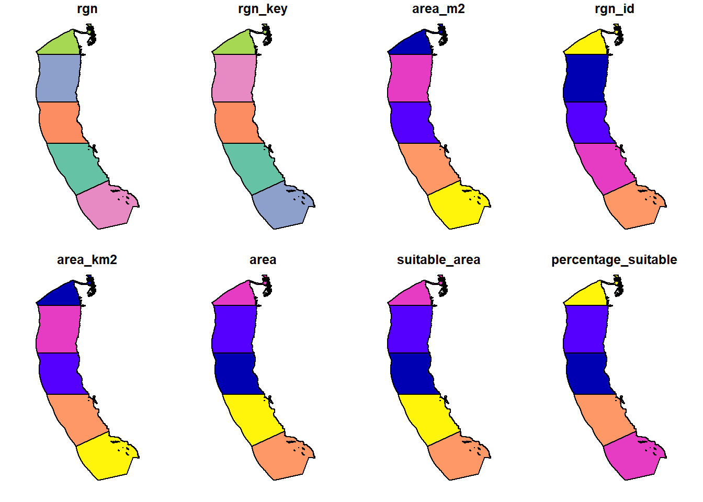
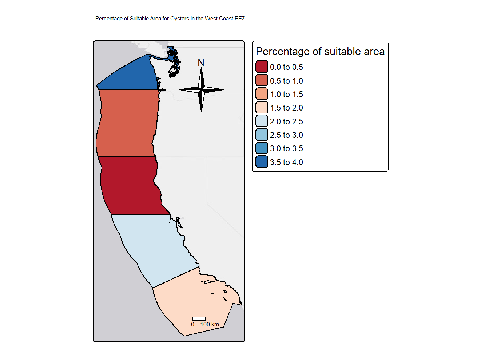
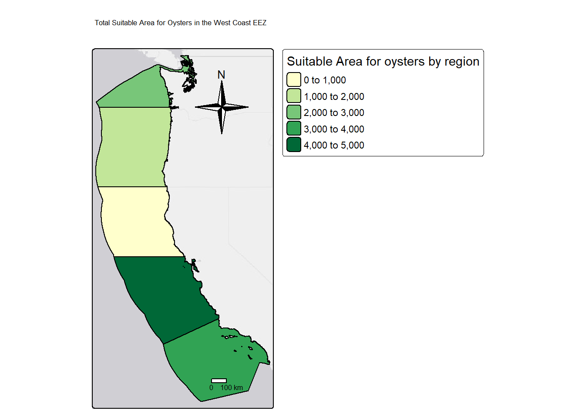

Marine Aquaculture Analysis: Finding the most suitable oyster region for commercial fisheries
Author
Rosemary Juarez
Published
November 16, 2022
Marine Aquaculture Analysis: Finding the most suitable oyster region for commercial fisheries
Overview
Marine aquaculture has the potential to play an important role in the global food supply as a more sustainable protein option than land-based meat production. We can map the potential for marine aquaculture globally based on multiple constraints, including ship traffic, dissolved oxygen, bottom depth. However for my interest, i will explore this using different variables
I want to determine which Exclusive Economic Zones (EEZ) on the West Coast of the US are best suited to developing marine aquaculture for several species of oysters. Based on previous research, we know that oysters needs the following conditions for optimal growth:
sea surface temperature: 11-30°C
depth: 0-70 meters below sea level
Learning objectives:
combining vector/raster data
resampling raster data
masking raster data
map algebra
Data
Sea Surface Temperature
I will use average annual sea surface temperature (SST) from the years 2008 to 2012 to characterize the average sea surface temperature within the region. The data we are working with was originally generated from NOAA’s 5km Daily Global Satellite Sea Surface Temperature Anomaly v3.1.
Bathymetry
To characterize the depth of the ocean I will use the General Bathymetric Chart of the Oceans (GEBCO). This will give us another factor to figure out which species is best for marine aquaculture.
Exclusive Economic Zones
Iill be designating maritime boundaries using Exclusive Economic Zones off of the west coast of US from Marineregions.org.
Data Process
To start, I am going to load all necessary data and make sure it has the coordinate reference system. I read in the sst and bathymetry rasterss. I then combine sst rasters into a raster stack. I make sure to reporject to the same epsg afterwards.
#read in West coast EEZ shape file w terra wc_EEZ_regions <-st_read(here("data","wc_regions_clean.shp"))
Reading layer `wc_regions_clean' from data source
`C:\Users\rosem\Documents\MEDS\Courses\EDS-223\marineculture-eez-analysis\data\wc_regions_clean.shp'
using driver `ESRI Shapefile'
Simple feature collection with 5 features and 5 fields
Geometry type: MULTIPOLYGON
Dimension: XY
Bounding box: xmin: -129.1635 ymin: 30.542 xmax: -117.097 ymax: 49.00031
Geodetic CRS: WGS 84
#read in SST rastersavg_sst_2008 <-rast(here("data","average_annual_sst_2008.tif"))avg_sst_2009 <-rast(here("data","average_annual_sst_2009.tif"))avg_sst_2010 <-rast(here("data","average_annual_sst_2010.tif"))avg_sst_2011 <-rast(here("data","average_annual_sst_2011.tif"))avg_sst_2012 <-rast(here("data","average_annual_sst_2012.tif"))#combine into raster stack avg_sst <-c(avg_sst_2008, avg_sst_2009, avg_sst_2010, avg_sst_2011, avg_sst_2012)#reading inbathymetry rasterdepth <-rast(here("data","depth.tif"))#reprojection here##checking all of them firstst_crs(wc_EEZ_regions) #EPSG:4326
Coordinate Reference System:
User input: WGS 84
wkt:
GEOGCRS["WGS 84",
ENSEMBLE["World Geodetic System 1984 ensemble",
MEMBER["World Geodetic System 1984 (Transit)"],
MEMBER["World Geodetic System 1984 (G730)"],
MEMBER["World Geodetic System 1984 (G873)"],
MEMBER["World Geodetic System 1984 (G1150)"],
MEMBER["World Geodetic System 1984 (G1674)"],
MEMBER["World Geodetic System 1984 (G1762)"],
MEMBER["World Geodetic System 1984 (G2139)"],
ELLIPSOID["WGS 84",6378137,298.257223563,
LENGTHUNIT["metre",1]],
ENSEMBLEACCURACY[2.0]],
PRIMEM["Greenwich",0,
ANGLEUNIT["degree",0.0174532925199433]],
CS[ellipsoidal,2],
AXIS["geodetic latitude (Lat)",north,
ORDER[1],
ANGLEUNIT["degree",0.0174532925199433]],
AXIS["geodetic longitude (Lon)",east,
ORDER[2],
ANGLEUNIT["degree",0.0174532925199433]],
USAGE[
SCOPE["Horizontal component of 3D system."],
AREA["World."],
BBOX[-90,-180,90,180]],
ID["EPSG",4326]]
#just need to project avg_sstavg_sst <-project(avg_sst, wc_EEZ_regions)
Next, I need process the SST and depth data so that they can be combined. In this case the SST and depth data have slightly different resolutions, extents, and positions. I don’t want to change the underlying depth data, so I will need to resample to match the SST data using the nearest neighbor approach. I do that by finding the mean STT, crop the depth raster to match the extent of the sst raster, and resample.
#find the mean SST from 2008-2012mean_sst <-mean(avg_sst)#convert sst from K to Cmean_sst_c <- mean_sst -273.15#now im going ot crop depth and mean_sstdepth_crop <-crop(depth,mean_sst_c)#using nearest neighbor approach to resampledepth_resample <-resample(depth_crop, mean_sst_c,method ="near")#stacking right nowresolution_test <-c(depth_resample, avg_sst)#checkingplot(resolution_test)

Find suitable locations
In order to find suitable locations for marine aquaculture, I also need to find locations that are suitable in terms of both SST and depth. to do this I make sure to reclassify my sst and depth data, and then use an overlat to multiply the cell values.
# oysters# sea surface temperature is 11-30C# depth is 0-70m below sea level#reclassification matrix for suitable range of sstrcl_sst_template <-matrix(c(-Inf, 11, NA, 11, 30,1,30, Inf, NA), ncol =3, byrow =TRUE) #reclassification matrix for suitable range of depthsrcl_depth_template <-matrix(c(-Inf, -70, NA,-70, 0, 1,0, Inf, NA),ncol =3, byrow =TRUE)#reclassifying mean_sst_Csst_suitable <-classify(mean_sst_c,rcl = rcl_sst_template, include.lowest =TRUE)#reclassifying depthdepth_suitable <-classify(depth_resample,rcl = rcl_depth_template,include.lowest =TRUE)#This function multiplies two layers, and i got this from the R documentation for lapfun <-function(x, y) {return(x*y)}#find locations that satisfy both conditionsoyster_suitable <-lapp(c(sst_suitable, depth_suitable), fun = fun)#checking if it workedplot(oyster_suitable)

Determine the most suitable EEZ
We want to determine the total suitable area within each EEZ in order to rank zones by priority. To do so, we need to find the total area of suitable locations within each EEZ.I find the suitable are by rasterizing my EEZ data, and later find the percentage of each zone that is suitable.
# finidng cell size of areas that are suitable for oysters so we can find the size of each cellgrid_cell_size <-cellSize(oyster_suitable,mask =TRUE,unit ="km")# now we need to add the eez zones and rasterize it too, with our newfound suitable oyster locationwc_zones_rast <-rasterize(wc_EEZ_regions, oyster_suitable,transform =TRUE,field ="rgn")#make a mask of wc raster and suitable locs for oysters#goal is to have areas of suitable oyster habitat that also fall in w coast EEZ regionswc_mask <-mask(wc_zones_rast, oyster_suitable)#now we are setting up the zonal areas with our grid cell and mask!suitable_zones <-zonal(grid_cell_size, wc_mask, na.rm =TRUE, sum)#joining data of the eez regions and suitable zones post-maskingsuitable_EEZ <-full_join(wc_EEZ_regions, suitable_zones, by ="rgn") %>%mutate(suitable_area = area,percentage_suitable = (suitable_area/area_km2 *100))plot(suitable_EEZ)

Visualize results
Now that my data has been cleaned up, I can now find the total suitable area for oysters by making two maps:
total suitable area by region
percent suitable area by region
This should give me a visualization of the most suitable areas for oyster culture by region
#map for total suitable area for oysters by regionsuitable_area <-tm_basemap() +tm_shape(suitable_EEZ) +tm_polygons('area',palette ='YlGn',border.col ='black',title ='Suitable Area for oysters by region') +tm_compass(type="4star", position=c("right", "top")) +tm_scale_bar() +tm_layout(main.title ='Total Suitable Area for Oysters in the West Coast EEZ')
Deprecated tmap v3 code detected. Code translated to v4
Warning: As of version 4.0, tm_scale_bar has been renamed to tm_scalebar and is
therefore deprecated
Warning: The 'main.title' argument of 'tm_layout()' is deprecated as of tmap
4.0. Please use 'tm_title()' instead.
#map for percent suitable area by regionpercent_suitable <-tm_basemap() +tm_shape(suitable_EEZ) +tm_polygons('percentage_suitable',palette ='RdBu',border.col ='black',title ='Percentage of suitable area')+tm_layout(main.title ='Percentage of Suitable Area for Oysters in the West Coast EEZ', main.title.size =10) +tm_compass(type="4star", position=c("right", "top")) +tm_scale_bar()
Deprecated tmap v3 code detected. Code translated to v4
Warning: The 'main.title' argument of 'tm_layout()' is deprecated as of tmap
4.0. Please use 'tm_title()' instead.
Warning: As of version 4.0, tm_scale_bar has been renamed to tm_scalebar and is
therefore deprecated
percent_suitable
Warning: Some legend items or map compoments do not fit well (e.g. due to the
specified font size).

suitable_area
Warning: Some legend items or map compoments do not fit well (e.g. due to the
specified font size).

Conclusion
Overall, It is noted that the most suitable area by percentage are either the farthest northern region or the southern region by LA county. As for Suitable Area, southern california proves to have a good quantity for oysters.